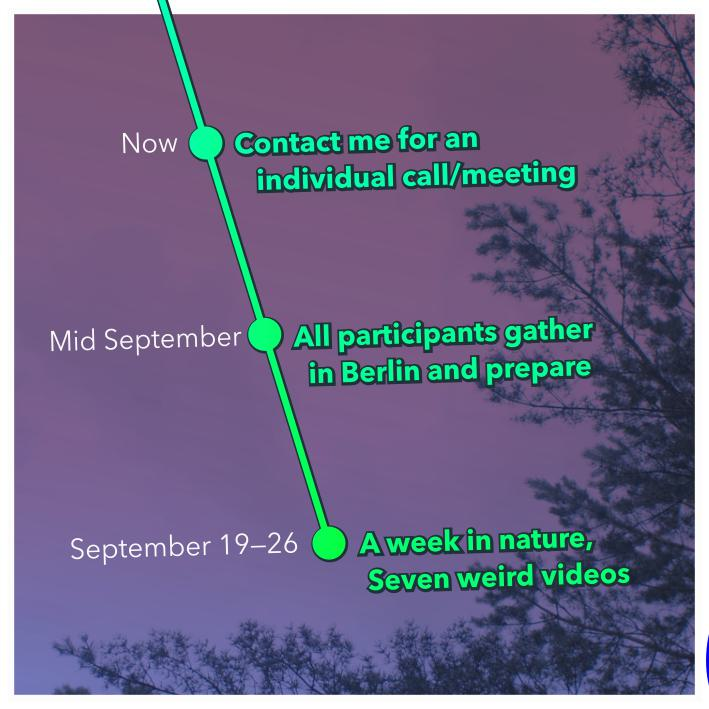
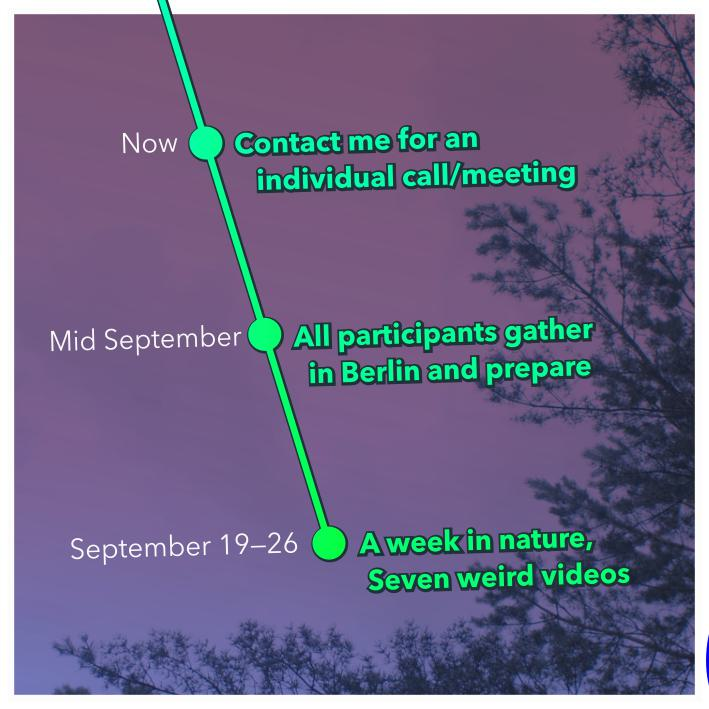

I spent the windy days with the cyberfeminists of the early 90s. At some point, a recurring figure
struck me: the SHELL, embodiment of the abutting surfaces that carry the imaginaries.
Where are you?
Your feet may be on a ground somewhere on this planet, but your hands reach halfway
into cyberspace. Or the other way around. Are you comfortable? How would you like to live, which beings
to share these minutes with?
I like
i like salons. i don't like work.
i like to host. usually i like to be hosted.
i like early music and traditional greek and klezmer music. i like
latex, wool and feathers. i like all shades of turquoise, red and yellow.
i like the long table in the narrow alley. i like a deep and spiraling conversation. i like
the smell in the small organic shop.
i like stories. i like speculation.
i like architectural patterns, in philosophy, visual design and software.
i like clarinets and Italian harpsichords from the 17th century.
i like fellini's movies because of their estetics.
i like to touch.
i like to make beautiful movies: light and shadow, atmosphere, water, earth,
body-constellations in movement. Textures. Lots of things going on.
i like my dreams. Very very much.
i like it when everyone is immersed in what they do.
i like curious people.
i like nonverbal play.
i like places and situations outside the logic of reciprocity.
i like skin, gentle impact, being naked. i like vulnerability.
I'm scared.
i like concave/convex, hard and soft, and everything in between.
i like moist moss and lichen.
i like coffee in the morning (80% Robusta).
i like calm shapes.
i like silence.
i sometimes wish my head was silent, so i stream a video. bad idea.
i like Le Gruyère.
i like dark rye bread.
i like rice with vegetables.
i like cabbage.
i like the colors of all the produce in autumn and of blue carrots.
i like lists.
i like 'i like' lists.
i like recursion, obviously.
these are just some of my favorite things.
i like french.
i like for no reason.
i like sexy everywhere.
i like smiles.
i like it when everything changes.
i like small catastrophes with clear solutions.
i like gifts.
i like linux and free&open software.
i like good documentation.
i like tiramisú, croissants and crêpes.
i like all sorts of nuts.
i like small rivers in the mountains.
i like the pool of cold clear water that forms around the source.
i like kind, nurturing conversations with strangers on instagram.
i like beOS/Windows 3 style window frames and i like
tiling windows even more.
i like 'browse history'.
i like 'single source of truth'.
i like 'composability' and 'cohesion'.
i like early cyberfeminist enthusiasm.
i like the sunlight in northern february.
i like all animals a lot.
i like when people tell me your so cute.
i like to be very disruptive once it gets too cosy though.
i like people to not know who i am.
i like to have no money problems.
i like to have a place to sleep, a place to be alone, enough
food and water and a toilet. I like squatting toilet with waterhose.
i like people around me who are peaceful and fierce.
i'd like to have a bathtub.
i like community kitchen and community sleeping room.
i like gardens.
i like painted nails.
i like human-animal hybrids.
i like dense old cities.
i like buildings that have lost their purpose long ago.
i like german expressionist literature.
i like buster keaton films.
i like to draw with Aquarell.
i like to build machines.
i like to create plays and scenes and music.
i like allegory.
i like autogestion culture.
i like the freedom of imagination.
i like the freedom to move around the world.
i like situations without "normal".
i like wood and wooden things.
i like trees in the city.
i like wildlife in the city. Like donkey and deer and lynx.
instead of cars and polluting factories.
i like the atlantic ocean and the windy beach (also the Mediterranean
and the north sea. the others i never saw).
i like Buenos aires, a city where everyone is poeta.
i like learning random stuff.
i like dark chocolate.
i like to dislike (but not now).
i like dialectics.
i like glue.
i like zines and valki's collage imagination.
i like witty dialogue.
i like abundance.
i like intimacy.
i like erotics.
i like katamarans.
i like trains.
i like train, tram and metro networks.
i like the portuguese Intercity train and the czech train bistro.
i like puddles.
i like swimming in the lake while it rains.
i like sweatlodge and sauna.
i like autostop.
i like where mountains touch the sea.
i like fog.
i like cats.
i like crows.
i like music that makes me cry.
i like political witchcraft.
i like magic (but I'm uneasy with esoterics and astrology).
i like direct action.
i like how circus troupes travel around from village to village.
i like derision as well as mysterium.
i like to mix past, present and future realities.
i like ochre and violet.
i like beautiful stones.
i like spiders.
i like shells.
i like self made egg tempera.
i like krapplack and azure.
i like copper, iron, brass and chrome.
i like paper and what you can make out of it.
i like surfaces and superficiality.
i like mutual care.
i like losing what i don't need any more.
i like to think I'm here temporarily, so why bother too much, or
rather: why not bother...?
i like the militants around the world who fight for everyone's freedom,
and whose freedom we fight for.
i like the destruction of property.
i like airships.
i like turtles.
i like asses.
i like my rage.
i'd like to focus my rage.
i like so much more. what do you like?
🚧 Poem for you...
Can't I do the good work? What's this bugging pain? I want to live on a boat under a willow-tent, I
want to read one page per day, I want a deep conversation per day, eat a bouquet of flowers and
colors, drink tea and coffee, move through the dim, prospective air of dreams. I want to take a dip
and melt, then reassemble myself in the harsh breeze; again and again, day for day, season for
season. Summer, whose promise, or imagined promise, is too large to bear, cruel you, give me the
courage to fall!
There you are, scent of budding, earthworm, virtuoso of harpsicord and trombone. I thought you were
gone. You should have gone for I was horrible. But perhaps you don't mind so much? You like this
place? And your comrades, they're here as well? How fabulous, how delightful!
I want to play the instruments with you. Or listen. I want to sing to you and cry. I want you close
or distant. In silent appreciation or disdain. I want all of you close or distant, I want to know if
I want you close or distant. I want to tell you in clear and calm words, now is the time for me, and
I want you to tell me, or to tell each other with our bodies, or with the closing note.
I miss you.
I miss you so dearly, but am I missing the imaginary memories I created, that I composed out of
helplessness and self-sorrow once, out of the vapors of warm soil, the moist, infested shade behind
a straw bale? Am I missing a second hand or third hand memory or caricature thereof?
We take a walk on the cloud that is mist over the morning river, our feet dissolving. I want to
freeze and to evaporate. I want my skin to be the portal of your anger and your hope. I want the
path to open once a year to let a stranger in, but only if they know what I don't know. Don't tell
me about the systems some guru has told you about. No, I want to admire how every limb of your body
moves with the swells of mood and temperature. I want your four liquids all over the place. I want
your grace and earnesty.
I know you. The better I know me I know you. I know us. We are many. I know it's a small step from
the cubicle to the vast, open. We are connected. I am feeling the umbilical channel ring like a
phone line. Knock, and I'm scared to accept.
Help me accept. Wind, help me accept and trust that I can deny when I need to. Sun, help me stay
where I am and go where I go. Help me channel my anger, my radiant, sound, manifest rage, into
beauty for I am one beautiful beast as my naked feet are dancing on the dry planks over mud and
puddles. Ocean, give me the salty drops that heal my pain. Let it rain on me to make my skin
transparent. Embrace my clay-made, readymade, multiple body to exchange the heat and soften the
form. Dust, injure my eyes so that I listen. Make me stiff and long so that I forget the dragon in
my womb.
This night, I had a pleasurable dream.
I woke up and told a friend, via e-mail. Pleasurable but disturbing. Distance is quite relative, and
I'm just learning to be intimate with myself.
Those who talk big about the future have no clue. They believe in euklidean
space and binary gender, and these superstitions make them deaf to the whirring and whirling all
around. I am hereby devoting the rest of my life to nurturing connections across and beyond the
territorial.
What I want
I don't want friends. I want fellow militants.
I don't want relationships. I want intensities.
I don't want art. I want magic.
I don't want money. I want power-with.
I don't want fulfillment. I want emptying.
I don't want a community. I want a fairy lair.
I don't want family. I want a post-capitalist cell.
I don't want connections. I want encounters.
I don't want comfort and security. I want boundaries.
I don't want guidance. I want confusion.
I don't want answers. I want mysteries.
I don't want challenges. I want to challenge.
I don't want creation. I want failure.
I don't want deals. I want gifts.
I don't want future. I want now.
I don't want sex. I want perversity.
I don't want privacy. I want maturity.
I don't want sustainability. I want system collapse.
I don't want harmony. I want wrath.
I don't want accountability. I want mutual care.
I don't want authenticity. I want beauty.
Wie die Welt
Wie die Welt vergeht
Gestern gab es noch Äpfel
Kreaturen wachsen in Tälern heran,
ich kann sie hören
Die Täler schließen nicht mehr
Go ahead and read some of these texts that have accumulated in the recent years. Or skip to the pictures.
Since I'm usually undecided, I leave you the choice whether you want to go chronologically, thematically or
associatively. As I love arbitrary-but-insistent schemes of classification, I came up with a trifecta of
themes that can be found in the stuff I was concerned with, ca. 2011-19. These are:
• approaching dance as economy, or economy as dance
• a collection of extended pleasure techniques
• taking "empty" spaces as sites of yet-untold stories.
What follows now may not be up to date, but then, the internet is mostly a trace of
memory, a dumpyard of unfinished and half-connected bites. Enjoy, my heart, and let me
know when you need something!
end of images
What is left to do if all new images are doomed to turn out as replicas of previous images? If everything
you see just tells the same old myth again?
This is where I found myself around 2013, and looking back today, I can discern three approaches I would
try. First, dreaming into the figures of abandoned spaces, and taking a site as myth container.
Voids filled with imaginary societies and the peculiar became self-evident. I sense the traction of
alternative myths.
Second, to empty the situation of all signs, to dance without knowledge, to let my belly guide. In small
groups, exploration of our machine pleasures, untainted from hypertrophic subjectivity, would
reopen our attention to materiality and mutuality, and enable encounter: as an unconditional gift. We
let ourselves fall into figures from a world without violence.
Third, where is the knowledge of that world? Which economy is without violence? What language
will post-patriarchy speak? Reading D.A. Haraway’s cyborg manifesto and Silvia Federici’s
economy-history of body inscriptions as scores, in several collaborative projects I put
together a toolbox of rituals, narratives and practices that may help us dance cyborgs' liminal spaces
into our realities: dancing economy.
FlupCV
2024 Presenting the Shell at p4p unconference and pa-f summer university, more digital commons projects with eco:bytes; more collaborations and beautiful travels and generosity.
2023 Experimental naked limit jam; several open Shell workshops and a celebration of grief; producing a dance piece with
Alina Belyagina; volunteering for an eco-anarchist server collective frontend
December 2022 Residency in Kempten with Katya Volkova and Alina Belyagina.
2022 Preparations for future congresses in Bologna and London; more Shell cooperations with
activists such as Michelle Zhang and Maya Cohen; also creating movingAcrossThresholds.com and designing the related
newsletter with Renae Shadler
Jul-Aug 2021 First International Congress on Shells, in the Garden.
2021 connecting with fellow curators in the Young Curators' Academy.
since 2021 re-visiting cyberfeminist writing and starting the SHELL process with some comrades
around the world.
Aug 2020 undressing: experiment with audience and cops in public space, at Alexanderplatz,
Berlin.
Sep 27, 2019 first installment of «material memory», practicing a non-symbolic body
language.
Oct-Apr, 2018-19 living in Buenos Aires, collaborating with local dancers on «genet.space» and
«mud body».
Jul 17, 2018 graduation performance at UdK Berlin, with «solo for my body»; received
Meisterschüler degree in fine arts.
Mar-Sep, 2018 facilitating four small residencies (with Pauline Payen, Dorota Michalak, Evgenia
Chetkovka and others) to dive into economies of space and coexistence with material, as material.
Ongoing project with excursions into places.
Feb-Jun, 2018 organizing regular dance improvisation sessions on «material cyborgism», my dance
practice for liminal bodies in liminal spaces, inspired by Donna Haraway’s Cyborg Manifesto and
contemporary political witchcraft.
Sep-Dec, 2017 initiating project «allegory of economy»;
Allegory as model for understanding and unlearning economic dispositifs.
Mar-Dec, 2017«future witchcraft», a collaboration with Josephine Witt,
Judith Förster and Pia Achterkamp; permanent performance lab in Aarhus, a show at Volksbühne, a
«framing ritual» workshop and experiment on body-and-frame awareness; final workshop in the artists'
space betOnest.
2017 working as performer for Alexandra Pirici, Rebecca Goyette and others; studying critique
of frames and spaces around performance and body art.
2016 initiation of the network compagnie sorcellerie and research on the inscription
of witch-hunts in the body; formulation of a gift economy («gift economy network», or
genet.space).
2015-18 learning to dance; attending classes with Alice Chauchat, Benoît Lechambre, Keith
Hennessey, Isabelle Schad and others; several collaborations with SODA and MA
students.
2010 founding the noncommercial filmmaking collective Filmgeschichte.
2009-12 film studies at FU Berlin; participating in various political street theatre groups.
2008-9 working at Armes Theater Chemnitz(material theater / children’s theatre).
1999-2008 switching school to a rural, violent village; later: robotics, many theater and
design projects.
1988-96 born and grown up in Frankfurt (Main).
process companionship
Since dance became my life, I am accompanying performance and dance projects. As a process companion, I
help with writing, critique, framing, and creative decisions, contribute my experience with
collaborative work, and propose fruitful approaches to develop artistic material.
Contact me if you have a process going and need an outside ear/eye/heart! I’m usually available for
a spontaneous, free coffee.
price structure: My hourly price is 0.1% of
your private property. If you have negative capital (debt), I will pay you. Sometimes I can offer free
service, just ask. I'm also more than happy to share with you our means of production, e.g. camera,
computer, knowledge, servers, bodies, taste.
And this is what I can offer you:
Translation (en/de/fr).
Writing.
I can help you with grantwriting (Berlin/Germany/Europe), storytelling, redaction, rhetorics, and
proper text formatting. Yes, I can be quite anal :-)
Artistic Research.
Know your sources. Know your material, and know your options of representing it.
Framing and Critique.
Together we can get to understand: what context do you place your work in? Which
institutions are you affirming or subverting? Which discourses will you leverage, and what is
your own stance within or in opposition to these frames? How exactly is your work political, and
where is your position in the many contemporary social struggles?
Light, stage and costume making.
Due to my experience in children’s theatre, performance, and no-budget filmmaking, I can support
you with video, sound and projection, color, lights, building structures, materials, props and
costumes. What you need for an impressive production is not stuff but devotion and time. I’m
especially interested in reusing accessible and free material, minimal effort for maximum
impact, and I’ll share lots of low-budget tricks with your team.
Videomaking, editing and postproduction.
With a ‘dancing camera’, we can capture volatile moments. Publish beautiful trailers and clips
for videodanza festivals or global youtube/twitter/vimeo... audiences. I can offer camerawork,
sound/foley/voiceover recording, collaborative editing, color grading, 3D animation and effects
compositing, subtitling, and publishing on social networks.
The Internets.
The web offers unprecedented resources for connections and realtime collaboration on a global
scale. Let’s leverage the virtual realms for team communications, documentation, archiving, PR,
or crowdsourcing. Since 2007, I have been creating content management systems and published
artists’ portfolios, blogs and apps to the internet. We can find a suitable strategy for your
project that won’t strain your limited resources.
⁂
Pauline Payen
Ready Mad, Berlin, 2018-19.
Grantwriting; research; translation; assistant of production.
This buffonesque play has been in development for several months. I helped Pauline writing
texts and applications and flesh out the presentation of her artistic approaches.
Additionally, I translated the a final grant application from English to German, thereby
reevaluating and sharpening several key concepts.
Deva Schubert & Juan Felipe Amaya Gonzalez
Grand Opening: Ein Euphemismus, Berlin, May-Jun 2019.
Concept and Grant writing; support in the early stages of creation; research on materials.
While this essay on metamodernity (a contemporary language that reappropriates postmodern forms
for affective and romantic storytelling) never came to realization, its development proved
fruitful to rebase and frame Deva’s practices, and to shine light on the material that Juan and
Deva are working on in their current and upcoming projects.
Eleni Danesi
Walling Practice; Molding the Void, Berlin, Sep 2018—May 2019.
Research, dance and videography.
Towards a series of workshops, Eleni researched how to dance the negative and ‘in-between’
spaces, both inside and outside our bodies, and how bodies form a collective sculpture of these
voids. She invited me to bring my camera, my body and my playfulness, and we investigated the
voids of Veolodrom (Berlin).
Mmakgosi Kgabi
The Shape of Emotion, Berlin, Nov 2018.
Mentoring (via HZT Berlin); stage and projection models; dome structures.
In preparation of her graduation performance, Mmakgosi approached me with the idea of projecting
her mouth into the inside of a giant dome. We recycled cardboard and researched spherical
projection. While the dome never made it on stage, our collaboration reaffirmed and informed the
artist’s approach of an accessible, i.e. nonexclusionary production.
Documentation and cinematography; stage projections.
For his piece on the absurdity of economics in the light of the so-called debt crisis, Akseli
devised a unique stage design. Life-size dancers are crawling up and down a giant number-board,
seemingly defying gravity and the linearity of time. I was happy to realize this idea with my
lighting, recording, dewarping and projecting tecniques. Furthermore, I documented the whole
process and contributed to the trailer video.
Paula Zacharias, projects on CI and Alexander technique. Buenos Aires, Verano 2018/19.
Videography and production, framing and critique.
Josephine Witt, Ein bisschen Julia und Romeo. Berlin, Sep 2018.
Video documentation.
Katarzyna Guzowska and Eleni Zipser, duo bombast (performances). Berlin, 2016-18.
In the two Sadness celebrations in December '23, we created a cosy space for sharing grief and all sorts of emotions. With singing, rituals, food, sweatlodge, exercises, collective storytelling, consent.
On Saturday, 18th February 2023, I hosted a workshop at altes
finanzamt where I will share my recent practices with Shells, and we can move with them and have fun and
unknow lots of hegemonial knowledge thanks to how weird the Shell is! The practice was open and
free.
Warming up shells, bones, senses, names, floor by surprise,
proximities and other companions, voices in the body places, inner chimera, becoming sand, becoming moss.
Fake Butoh
Practicing co-presence with the Shell.
Teatime & Wishing circle
2.
Assembling a collective toolbox
“Know-how-to-know-with”
Break
One of the following experiments:
“Case study†Boundaries we encounter in our activist
practices
“Tableau Vivant†Growing a collective exoskeleton
“Switching the Shell†Experimental body-replacement
I want to share and receive memories stored in the body, from body to body, not with spoken language in
academic or social frames. I want to perceive my body and yours and our collective body as material, not
as signifiers and tokens of oppressive and oppressed identities.
This language has no symbols. It is a precarious language of our precarity. It has no meaning other than
our bodies and their encounter. I think, in the long term, that's how we can organize and become the
Leafy Proletariat that Donna Haraway envisioned.
«material memory» is a practice based on the tiny movements and oscillating tensions that run through our
bodies, shaped and modulated by the memories that inhabit our muscles, fascia, fat tissue.
«mud body» started in Buenos Aires, in February 2019, with «Coro», a score
that can be superimposed on any public space. As we were improvising in the parks and playgrounds of
Buenos Aires, we found ourselves drawn to the wet earth, so we decided to embark on a 15-months journey into mud, mud-bodies, and the body-political imbrications of
playing in this matrix.
tableau vivant
In tableaux vivants, ‘living images’, actors represent a concept through staging a scenic figure
taken from a known text. It fell out of use amidst the onset of industrialization due to a somewhat
ribald excess: a body is always more than what it supposedly marks. In particular, excessive pleasures
may transcend narrative frames and bear yet-unwritten myths from the cyborg worlds. A gallery exhibition
with the working title «tableau vivant» is afoot, based on my graduation work «solo for my body» (July
17, ‘18)
collection of ephemeral art
An ephemeral artwork is the product of artistic labour that ceases to exist some time after the labour.
The relation between the art industry and ephemerality is peculiar as an ephemeral artwork is hard to
commodify. Oral histories, documentation and theatrical reenactment are strategies to keep an ephemeral
artwork's aura, i.e. its impact on the sphere of symbolic capital, and thereby retaining the principles
of authorship and private property. Embodied memory functions as the medium by which a dance-work is
preserved in such a way that it can be restaged. This makes the dancer's body literally a currency.
On the other hand, forgetting and unlearning, false memories, ageing and physical processes in the body
transform the artwork. And when an artist is performing for the now, is not every reenactment and every
memory a different artwork in a different context?
My collection of ephemeral artworks attempts to undo the aura and highlight the actual work, the labour
that produces an ephemeral artwork. Read it as a contribution to an economy not based on conditional
exchange and conventional evaluation but on the uncountable appreciation of lifetime and engagement.
The collection is currently being digitized.
For inquiries, contact me and stay tuned until the documentation appears
here.
performing economies
Economies of space underlie every choreography. Bodies serve as currency and token in economies of
representation. And finally, art is a market in which I am a freelancer.
During the «sand residency» in July ‘18, Pauline, Dorota and me explored the mutualities that emerge
within an improvised dance. Several workshops throughout June have produced a comprehensive codex of
practices.
The collective research project «allegory of economy» (December ‘17, ongoing) aims to leverage allegory
as a tool to understand and reassemble economies in relation to bodies, transactions and customs
«future witchcraft» (feb-dec ‘17) comprised of a residency with an open lab, several performances and
rituals, workshops and a theatre play, all approaching the political struggles of early modern women in
Europe that ended, as we all know, in mass gynocides. Can we, in our situation, join these witches’
emancipatory stategies of magic practice, ritual, and direct action, and eventually undo the historic
establishment of female gender as economic marker?
Through the «framing ritual» (Jun 9, ‘17), I related the apparatus’ frame (such as central perspective)
through spontaneous gestures and inscriptions (lines painted on skin) to inner foci, in an attempt to
exclude conventional interprlay between these three layers. The awareness of five foci in the body which
mold the appreciation of surroundings proved a useful ingredient for all successive practices.
Can dance crack codes of deprivation?
“This is the first discovery: that patriarchy is not a construction, an order or a structure, but an
economy, for which women are the first and founding commodities”, Sadie Plant writes in her essay «On
the matrix: cyberfeminist simulations». And then she quotes Luce Irigaray: In this economy, “Women,
signs, commodities, and currency always pass from one man to another”; their existance being reduced to
what it signifies: “the possibility of mediation. transaction, transition, transference”. And adds:
“Women have served as his media and interfaces, muses and messengers, currenties and screens,
interactions, operators, decoders, secretaries… they have been man’s go-betweens, the in-betweens,
taking his message, bearing his children, and passing his genetic code.”
In retrospect, allegories and emblems of the early modern age are blatantly sexist, and nescessarily so
as they were to depict interfaces of circulation as female-marked bodies. The project of gendering the
symbolic realm, a foundational effort of modern patriarchy, has, despite resistance from women, been
successful, and continues to inform image production in the contemporary fields. And, in a
not-⁠ so-⁠ ironic reappropriation, “Twentieth-century scientists call on this earlier visual technology
for insisting on a specific kind of reality, which readily makes today’s observers forget the
conditions, apparatuses and histories of its production. Especially in computer an information sciences
and in biotechnology and biomedicine, representations of late twentieth century technosciences make
liberal use of iconic exemplars of early modern European art/humanism/technology. Current images of
technoscience quote, point to, and otherwise evoke a small, conventional, potent stock of Renaissance
visual analogues, which provide a legitimate lineage and origin story for technical revolutions at the
end of the Second Christian Millenium”, as Donna J. Haraway describes in her «Virtual Speculum». Deeper
motivations may have stayed the same for 500 years as the extended-shelf-life visual apparatus canonized
in the Renaissance still, in distinct ways, serves the production and reproduction of gender.
The visible spill of early modern emblems into cyber-⁠ science throughout the 90s has inspired me to
revisit contemporary body representation through the lens of Allegory. I discovered this word in many
critical texts on 20th century feminist performance art as well as on early modern construction of
gender, and despite its demise in the 19th century, Walter Benjamin’s seminal essay on Allegory seems to
have spurred a slow but lasting reassessment of this concept throughout late modernity right into post
modernism. Allegory, with its ternary structure and its figure’s superfluity, helps uncover myths that
contemporary symbols would keep implied.
Economy is the other side of the model I work with, and it appears in three guises. First, as the
circulation mediated by the figure-as-sign. Rebecca Schneider, in «The Explicit body», asserts that
female-marked bodies in capitalism serve as “allegory for commodity circulation”, and to form the
ternary structure of allegory, the text in this case is the ‘dreamscapes’ of ‘insatiable desire’, an
economy itself, in which touch is impossible and gaze is infinite. Second, economy is instrinsic to my
process of working, where resources, transactions and symbolic evaluation determine what I can produce.
And third, the volatile space I summon through performance/dance is itself structured by an economy of
bodies-⁠ as-⁠ material, even before any score is noted.
Allegory is a model to scutinize and construct approaches to alterity, i.e. what T. W. Adorno called
‘mimesis’. The explication of code/myth as requisite allows for normative assessment. It allows me to
create images without conceding my judgement to the seductive affirmativity of the symbol, and it
potentially gives the Other a language.
genet.space
Can extended choreography inform software models? We research the bijection of category theory and
dance as we are implementing a tool to generate accessible and non-competitive virtual spaces. An
ongoing collaboration with Katherine Evans and Alejandro Karasik.
genet, the gift economy network, is a garden of knowledge. It is a virtual space in which each
avatar (a group of users, an individual, or a bot) is invited to plant their compositions. Paths from
one space to another are not generated by algorithms but by curatorial activity of the avatars, i.e. by
invitation. Virtual spaces are the commons of the present and the future, and they may serve an
invaluable role in facilitating the enormous logistical challenge of distributing goods for everyone,
thereby replacing capitalist ways of structuring access.
Dancability makes software models tangible.
In its current form, the interface to genet allows avatars to compose and edit collaboratively. In
contrast to any other content management system, it bases its ontologies on a language derived from
dance improvisation practices. In fact, any program written in ambilang is an easy-to-grasp
score for a dance improvisation jam.
In my experience, the hardest errors in computer programming arise once the implementors are no longer
sure about what the program is actually doing, i.e. when they give up understanding of the model that
their software realizes. In this case, dancing this model makes the software tangible again.
Allegory of Economy
Umbrella project over somatic, art-historic, and performative research and experiments. Since
December '17.
In collaboration with numerous choreographers, facilitators and performers, we set to link our
economic struggles as freelancers with a performative approach to economic systems, informed by the
three occurances of economy in our practices as stated above.
Sand Residency
The overarching theme for the Moss and Sand practices (Summer '18) was: how to connect as material.
Why? Well, while we are already cyborgs, we are isolated. We need to learn affinity to connect and
to become the global Proletariat. Donna Haraway specifies this Proletariat as «leafy». I want to
learn from moss and from sand how to connect! This is a radically different 'economy' than
patriarchal capitalism.
Framing Ritual
The framing ritual was part of 2017's future witchcraft series of experiments (July, with 12
participants and 4 preparational workshops). My questions are: 1) can the 'framing' of the body
through visible lines make our motivations more transparent? 2) How does this 'inscription'
(Federici) relate to patriarchal inscriptions such as ableism, gender, skin color?
machine pleasures
In «tableaux vivants», ‘living images’, actors represent a concept through staging a scenic figure taken
from a known text. It fell out of use amidst the onset of industrialization due to a somewhat ribald
excess: a body is always more than what it supposedly marks. In particular, excessive pleasures may
transcend narrative frames and bear yet-unwritten myths from the cyborg worlds. My graduation work «solo
for my body» (July 17, ‘18) assaied the concept.
«machine skills» was a workshop performance I gave in several frames. Tackling D.A. Haraway’s enigmatic
assurance that “intense pleasures” were to arise from “machine skills”, I created a garden for cyborgs,
and invited the participants to embark on counterpoint singing, affirming they have the according
skills.
The «cyborgism» practice was the result of my first interpretation of Haraway’s Cyborg Manifesto as a
choreographic score. In several workshops and jams, the guests explored the pleasurable implications of
being a cyborg in a shared space.
How would a cyborg perceive and engage the material world? Sensations of touch and gravity guided the
«moss residency» with dancer/artist Pauline Payen that comprised of somatic practice as well as felting
interfaces, and talking about our economic situations.
An aspect of cyborgs’ spacial economy is how we perceive limits. In recurring «limit jams», the invitees
explored resistance and presence through malleable, contracting and expanding boundaries with tools from
meditation, contact improvisation and martial arts.
The touch of material became very visceral when rain was pouring during the participative installation of
«river species», part of the «future witchcraft» series of events.
«my stillness with the garden», a technique for grounding and preceiving everything as material began to
develop in early ‘16 within ritual retreats I organized on the basis of Starhawk’s emancipatory
witchcraft writings.
Throughout summer ‘14, I met with three fellow artists to move like animals. We called ourselves the
«crawling group». What started as a development process towards the production of a butoh-inspired
performance, eventually became a deep dive into an alternative way of encounter, with both the
environment and each other.
Tableau Vivant
River Species Ritual
Make a long river. create 3 or 4 shapes (Water Lily, bridge, Stone…). Go into the river, feel the
current, take a shape until the current throws you off balance. Float until you find a new shape.
This participative installation was part of the 2018 annual exhibition at the HZT campus of UdK Berlin.
myth container
What I call myth container («Fabelcontainer», ‘12-⁠ 13) is a site-⁠ as-⁠ figure. Armed with the
hieroglyphic fragments of an abandoned, or counterfeit discourse (they are always latent), we can enter
this site-⁠ as-⁠ figure and practice the dislocation of our dance into a parallel world. Historical
discourses depend on models of societies, and, in retrospect, evoke fascinating myths, stories within
ideal societies. I stumble upon heterostopies, sites that are both what they are, i.e. material, and
ideal, as if they were hosting imaginary parties of societies in a parallel world. This nourishing
relation is mutual; the choice of a site juxtaposed with an abandoned discourse produces an ideal
society, and in many ways this production covertly mirrors allegorese (allegorical interpretation),
where a vessel that is more than its function, the figure of the body as marked by gender and other
attributes, invokes meaning through a conventional myth. Conclusively, just as we commonly dance to
produce a volatile space, through latent narratives, the volatility of a space arouses a dance in
return.
«Luftschiff» and «Architecten», as well as the «Akademie» and «Lustgarten» take place in
a fictional socialist Europe that has never embraced the steam engine. While the latter two are situated
in a stratified but affluent late (and long) 19th century, the airship in «Luftschiff» crosses the
Baltic sea in 1917, and hosts the author of a fiction, «Architecten», that projects WWI up int the year
‘99, including a slimy communications network based on biotech. The paradigmatic topos from which
discourses evolve is that of neoclassical sculpture. The European discourses of rationality, humanism
and misogyny find a lasting expression in gardens with statues, especially of the ‘pleasury’ variety. A
21st century European may find it hard to reconcile masculinist Enlightenment rhetoric with the tactile
qualities of Baroque and Classicist sculpture, in which the human figure poses as some mythical
emanation. The unease is caused by the ‘too-⁠ much’ that Walter Benjamin ascribes to (Baroque)
allegorical figure. Classical and neoclassical aesthetics petrify allegory to an unbearable extent
during the ‘Sattelzeit’ (early 19th century). This conflict warrants a nonfactual scenario, in which the
early modern forms around allegory would have been rescued into modernity. How would the first modern
world war be staged through this hypothetical setup? Which art corresponds to a society that perpetually
reperforms long-⁠ forgotten antique myths? Very likely, we may develop a sensibility for the history of
that world in our’s—after all, has the early modern age in Europe ever ended?
The site-⁠ as-⁠ figure in an allegorical equation is a device I find myself using all the time. But
similarly, the solutions to the equations are developing their own lives as inquiry devices: they
illuminate the contingency of today’s specific patriarchy. As they intergrow, their shared world, a
‘parallel’, raises issues of our’s. This is the cradle in which my inquiries in ‘18—«allegory of
economy», «my stillness with the garden», and the performances around «cyborgism» and «machine
pleasures»—would form: they are all questions that other world poses us.
my stillness in the garden
Workshops and experiments in remote sites. ‘15-⁠ 18.
The basic assumption is that a certain stillness facilitates the appreciation of wind, moisture and
presence towards a sense of mutuality: my stillness in the garden is my “with-⁠ ness”.
As a freelance artist, I am economically dependent on the goodwill of those who own more than they
need. This includes commercial foundations that can save taxes and restore their publich image
through «philantrophy», the political units from city to continent that see themselves pitted
against each other in a competition for the art that can turn excrements into metal, and finally, of
course, the customers of my services. Some of which think they can opt out of a contract after the
work is done.
As a freelance artist, I work for free. I connect with fellow artists to write huge applications. But
I don’t want to write CVs and Begging E-Mails and pseudophilosophical nonsense around a good idea.
Not if it’s not remunerated. I want to go out and do.
As a freelance artist, I connect my several websites and social media accounts and media servers and
struggle to keep everything up to date. But I don’t want to manage an artist’s archive. Not without
remuneration. I want my work to be paid for.
As a freelance artist, I hope to get exposure, recommendation, a name. Not because I like it but
because I need the money. I help friends and friends-of-friends with my knowledge and my tools. Not
because they will give me anything in return but because it’s what I have in abundance. I prepare
and study subjects that may be fruitful for a future project. Not to entice potential investors but
because this work is my passion. But I don’t want to ask everyone if they might perhaps offer me a
donation, and exhibit art in gallerys where nobody buys it, and give the same technical support over
and over, and stay with a rotting pile of artworks. Not for free.
As a freelance artist, I will survive. I have loving friends and family that will always share with
me what they have. But that’s a dog’s life! I am anxious because I am earning too little. I am
anxious because my brain is constantly calculating how much I can spend and which client I must
remind to pay me. I am anxious because the philantrophic institutions don’t care for my everyday
life problems, and they won’t pay me the money that I already spent if anything goes wrong.
Fuck the gallery. Fuck the state. Fuck the philantrophic sociopath threefold. Just give me money so I
don’t need to think about money any more.


 
